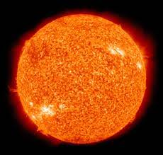

Космос і сонячна система
Со́нячна систе́ма — планетна система, що включає в себе центральну зорю — Сонце, і всі природні космічні об'єкти (планети, астероїди, комети, потоки сонячного вітру тощо), які об'єднуються гравітаційною взаємодією. Сонячна система є частиною значно більшого комплексу, який складається із зірок і міжзоряної речовини — галактики Чумацький Шлях.
Сонце складає ≈99,85 % маси Сонячної системи; газові планети-гіганти (Юпітер, Сатурн, Уран і Нептун) складають 99 % залишкової маси. Як і в інших зір, у надрах Сонця ефективно відбуваються термоядерні реакції з виділенням енергії. Планети за фізичними характеристиками поділяють на дві групи. Ближче до Сонця розташовані планети земної групи: Меркурій, Венера, Земля, Марс; далі від Сонця розташувались планети-гіганти: Юпітер, Сатурн, Уран, Нептун. Планети земної групи порівняно невеликі, їхня густина ≈5 г/см³; вони складаються переважно з важких хімічних елементів; мають гаряче металеве ядро, оточене мантією із силікатних порід, і верхній шар — кору. Планети-гіганти не мають твердої поверхні, бо за хімічним складом (99 % гідрогену і гелію) і густиною (≈1 г/см³) вони нагадують зорі, а їхня велика маса спричиняє нагрівання ядер до температури понад +10 000 °С.

Сонце - зірка сонячної системи
Космі́чний про́стір, або ко́смос (дав.-гр. κόσμος − всесвіт), — відносно порожні ділянки Всесвіту, розташовані поза межами атмосфер небесних тіл. Всупереч розповсюдженій думці, космос не повністю порожній, але у ньому дуже низька густина речовини. Переважно це Гідроген в атомарному, молекулярному чи іонізованому стані, також є інші прості гази (Гелій, Нітроген, Оксиген), тверді частинки пилу, що містять переважно Карбон, а за допомогою мікрохвильової спектроскопії виявлено кілька десятків різних молекул.
Сонячна система складається з гравітаційно пов'язаних небесних тіл: масивного центрального тіла — Сонця — та численних об'єктів, що обертаються навколо нього. Це вісім великих планет (Меркурій, Венера, Земля, Марс, Юпітер, Сатурн, Уран, Нептун), понад 100 їхніх супутників, пояс астероїдів та пояс Койпера, комети, метеороїди та космічний пил. Пояс Койпера, який містить близько 70—100 тис. об'єктів діаметром понад 100 км, виявлено у 1992—2000 рр. завдальшки 30—50 а. о. від Сонця. До нього належить, зокрема, Плутон, який 26-та Генеральна асамблея Міжнародного астрономічного союзу 2006 року перекласифікувала з планети на карликову планету.
Головна роль у Сонячній системі належить Сонцю. Його маса приблизно в 750 разів перевищує масу всіх інших тіл, що входять до системи. Гравітаційне тяжіння Сонця є визначальною силою для руху всіх тіл Сонячної системи. Середня відстань від Сонця до найдальшої від нього планети Нептун становить 30 а. о., тобто 4,5 млрд км, що дуже мало в порівнянні з відстанями до найближчих зір. Тільки деякі комети віддаляються від Сонця на 1015 а. о. і можуть відчувати істотний вплив тяжіння інших зір.
За сучасними уявленнями Сонце й Сонячна система утворилися близько 4,6 млрд років тому внаслідок гравітаційного стискання хмари міжзоряного газу й пилу. Більша частина маси об'єктів, пов'язаних із Сонцем гравітацією, міститься у восьми відносно відокремлених планетах, що мають майже кругові орбіти й розташовані в межах майже плоского диска — площини екліптики. Чотири менші внутрішні планети: Меркурій, Венера, Земля та Марс, звані також планетами земної групи, складаються здебільшого з силікатів та металів. Чотири зовнішні планети: Юпітер, Сатурн, Уран та Нептун, звані також газовими гігантами, значною мірою складаються з водню та гелію та набагато масивніші, ніж планети земної групи.
У Сонячній системі є дві ділянки, заповнені малими тілами. Пояс астероїдів, що розташований між Марсом і Юпітером, за складом подібний до планет земної групи, оскільки складається переважно з силікатів і металів. Найбільшими об'єктами поясу астероїдів є Церера, Паллада та Веста. За орбітою Нептуна розташовано транснептунові об'єкти, що містять багато замерзлої води, аміаку та метану. Найбільшими з них є Плутон, Седна, Гаумеа, Макемаке та Ерида. Додатково до тисяч малих тіл у цих двох ділянках є інші популяції різноманітних дрібних тіл, таких як комети, метеороїди та космічний пил, що рухаються навколо Сонця.
Шість із восьми планет та три карликові планети мають природні супутники. Кожна з зовнішніх планет оточена кільцями пилу та інших частинок. Сонячний вітер (потік плазми від Сонця) утворює в міжзоряному середовищі «міхур», який називається геліосферою і простягається до краю розсіяного диска. Гіпотетична хмара Оорта, що слугує джерелом довгоперіодичних комет, може сягати приблизно в тисячу разів більшої відстані.
Сонячна система входить до складу Чумацького Шляху. Під час руху в Галактиці Сонячна система час від часу потрапляє до міжзоряних газопилових хмар. Внаслідок високої розрідженості речовини цих хмар занурення Сонячної системи в хмару може виявитися лише в невеликому поглинанні й розсіюванні сонячних променів. Вплив цього ефекту в історії Землі наразі не встановлений.
Сонячна система, як і будь-яка система, що обертається, має момент кількості руху (МКР). Головна частина його (близько 90 %) пов'язана з орбітальним рухом навколо Сонця масивних Юпітера й Сатурна. Осьове обертання Сонця становить лише 2 % МКР усієї С онячної системи, хоча маса Сонця становить понад 99,8 % загальної маси. Такий розподіл МКР між Сонцем і планетами зумовлений повільним обертанням Сонця й величезними розмірами планетної системи — її поперечник у кілька тисяч разів більший, ніж поперечник Сонця. Усі великі планети — Меркурій, Венера, Земля, Марс, Юпітер, Сатурн, Уран і Нептун — обертаються навколо Сонця в одному напрямку (у напрямку осьового обертання самого Сонця), майже круговими орбітами, площини яких мають невеликий нахил одна до одної (і до площини сонячного екватора). Площину земної орбіти — екліптику — вважають основною площиною для відліку нахилу орбіт планет та інших тіл, що обертаються навколо Сонця. Відстані в Сонячній системі зазвичай вимірюють в астрономічних одиницях — середня відстань від Землі до Сонця, що приблизно дорівнює 150 млн км.
Фізичні дослідження космосу люди розпочали у 20 столітті з появою висотних польотів на повітряній кулі. За цим пішли пілотовані ракетні польоти. Через високу вартість потрапляння в космос, пілотований космічний політ був обмежений низькою орбітою Землі та Місяцем. Натомість, безпілотні космічні апарати досягли усіх відомих планет Сонячної системи.